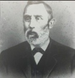

My Family Tree
Person Chart
Parents
| Father | Date of Birth | Mother | Date of Birth |
|---|---|---|---|
 Solomen Dorney Sr. Solomen Dorney Sr. |
6 FEB 1807 |  Susanna Scholl Susanna Scholl |
27 OCT 1810 |
 Birth
BirthNotes
| Solomon Dorney started the precursor to Dorney Park in 1860, initially establishing a fish hatchery and summer resort on his estate near Allentown, PA. In 1870, he expanded the attraction with games, rides, and a zoo, transitioning it from a private estate to a public amusement venue, officially known as "Dorney's Trout Ponds and Summer Resort" by 1884 |
Media
Pictures

Screenshot 2026-01-22 at 4.13.37 PM